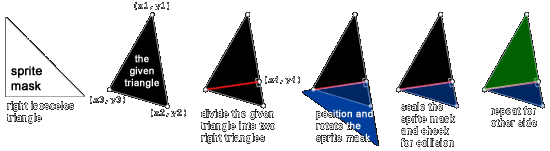

collision_triangle
This script function works like the built-in collision_*() functions and
is used to detect collisions with a triangular region. It uses a collision
mask shaped like a right-angled triangle to detect collisions with pixel
accuracy (unlike other simpler methods). Because any triangle can be split
into two right-angled triangles, the function can manipulate this single
collision mask to fit any type of triangle using only scaling and rotation.

The partner function collision_triangle_init() is required to initialize
the main function collision_triangle() and must be called once before the
main function can be used. The initialization function creates a collision
mask with the desired resolution and prepares the __objCollisionTriangle
helper object for use by the main function. See function header notes for
more information.
NOTE: This script function requires some manual assistance before use.
There needs to be a helper object named __objCollisionTriangle in your
project before the function can be initialized. Once added, the object
needs no further editing and does not need to be added to any rooms.
- collision_triangle(x1, y1, x2, y2, x3, y3, object)
- Returns an object instance id that collides with a given triangle.
COPY/// @func collision_triangle(x1, y1, x2, y2, x3, y3, object)
///
/// @desc Returns an object instance id that collides with a given triangle.
/// If there is no collision, keyword noone is returned.
///
/// IMPORTANT: Initialize with collision_triangle_init() before first use.
///
/// @param {real} x1 x-coordinate of 1st point of triangle
/// @param {real} y1 y-coordinate of 1st point of triangle
/// @param {real} x2 x-coordinate of 2nd point of triangle
/// @param {real} y2 y-coordinate of 2nd point of triangle
/// @param {real} x3 x-coordinate of 3rd point of triangle
/// @param {real} y3 y-coordinate of 3rd point of triangle
/// @param {object} object object or instance to check, or all
///
/// @return {instance} object instance id
///
/// GMLscripts.com/license
function collision_triangle(x1, y1, x2, y2, x3, y3, object)
{
// Bounding box check (early out)
var xmin = min(x1, x2, x3);
var xmax = max(x1, x2, x3);
var ymin = min(y1, y2, y3);
var ymax = max(y1, y2, y3);
var inst = collision_rectangle(xmin, ymin, xmax, ymax, object, false, false);
if (inst == noone) return noone;
// Triangle perimeter check (early out)
inst = collision_line(x1, y1, x2, y2, object, true, false);
if (inst != noone) return inst;
inst = collision_line(x1, y1, x3, y3, object, true, false);
if (inst != noone) return inst;
inst = collision_line(x2, y2, x3, y3, object, true, false);
if (inst != noone) return inst;
// Find long side, make it (x1,y2) to (x2,y2)
var d12 = point_distance(x1, y1, x2, y2);
var d13 = point_distance(x1, y1, x3, y3);
var d23 = point_distance(x2, y2, x3, y3);
var t;
switch (max(d12, d13, d23)) {
case d13:
t = x2; x2 = x3; x3 = t;
t = y2; y2 = y3; y3 = t;
d12 = d13;
break;
case d23:
t = x1; x1 = x3; x3 = t;
t = y1; y1 = y3; y3 = t;
d12 = d23;
break;
}
// From (x3,y3), find nearest point on long side (x4,y4).
var dx = x2 - x1;
var dy = y2 - y1;
var x4, y4;
if ((dx == 0) && (dy == 0)) {
x4 = x1;
y4 = y1;
}else{
t = ((x3 - x1) * dx + (y3 - y1) * dy) / (d12 * d12);
x4 = x1 + t * dx;
y4 = y1 + t * dy;
}
// A line constructed from (x3,y3) to (x4,y4) divides
// the original triangle into two right triangles.
// Fit the collision mask into these triangles.
var d14 = point_distance(x1, y1, x4, y4);
var d24 = d12 - d14;
with (__objCollisionTriangle) {
image_angle = point_direction(x1, y1, x4, y4);
image_xscale = d14 / size;
image_yscale = point_distance(x3, y3, x4, y4) / size;
if ((x1 > x4) ^^ (y3 < y4)) image_yscale *= -1;
inst = instance_place(x4, y4, object);
if (inst != noone) return inst;
image_xscale = -d24 / size;
inst = instance_place(x4, y4, object);
if (inst != noone) return inst;
}
return noone;
}
- collision_triangle_init(size)
- Required to initialize collision_triangle() before first use.
COPY/// @func collision_triangle_init(size)
///
/// @desc Required to initialize collision_triangle() before first use.
/// Creates an instance of stub object __objCollisionTriangle and
/// prepares it for use including the creation of triangle collision
/// mask of the given size. A larger size can improves accuracy at
/// the expense of memory usage. The default size of 256 pixels is
/// probably sufficient for most purposes.
///
/// This function only needs to be called once and the collision
/// triangle instance persists between rooms. If it is called again,
/// any previous triangle collision instance will be destroyed along
/// with its collision mask sprite, and a new instance and collision
/// mask sprite will be created using the new size.
///
/// IMPORTANT: An object called __objCollisionTriangle must exist
/// in your project before use. It should be a blank stub and does
/// not require any additional settings or inclusion in any room.
///
/// @param {real} size size of mask in pixels (default 256)
///
/// @return {bool} true on success, false otherwise.
///
/// GMLscripts.com/license
function collision_triangle_init(size=256)
{
with (__objCollisionTriangle) {
if (sprite_exists(mask_index)) sprite_delete(mask_index);
instance_destroy();
}
var color = draw_get_color();
var surface = surface_create(size, size);
if (!surface_exists(surface)) return false;
surface_set_target(surface);
draw_clear_alpha(c_black, 0);
draw_set_color(c_white);
draw_triangle(size, size, size, -1, -1, -1, false);
surface_reset_target();
var sprite = sprite_create_from_surface(surface, 0, 0, size, size, true, false, size, 0);
surface_free(surface);
draw_set_color(color);
if (!sprite_exists(sprite)) return false;
sprite_collision_mask(sprite, false, 2, 0, 0, size, size, bboxkind_precise, 0);
with (instance_create_depth(0, 0, 0, __objCollisionTriangle)) {
self.persistent = true;
self.visible = false;
self.mask_index = sprite;
self.size = size;
}
return true;
}
Contributors: xot
GitHub: View · Commits · Blame · Raw